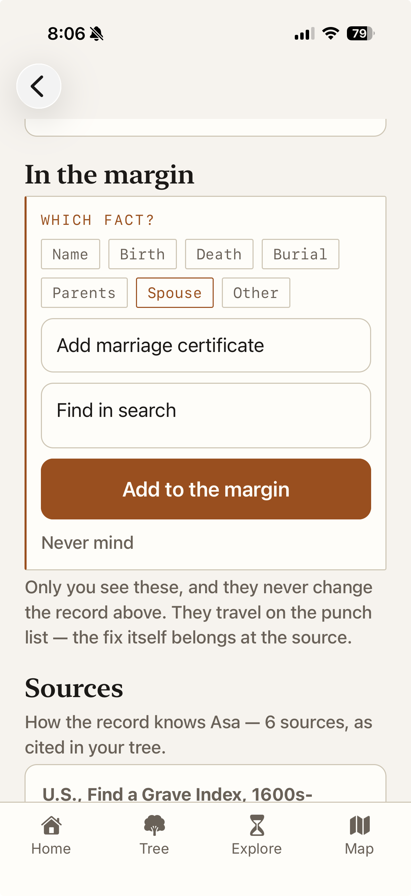
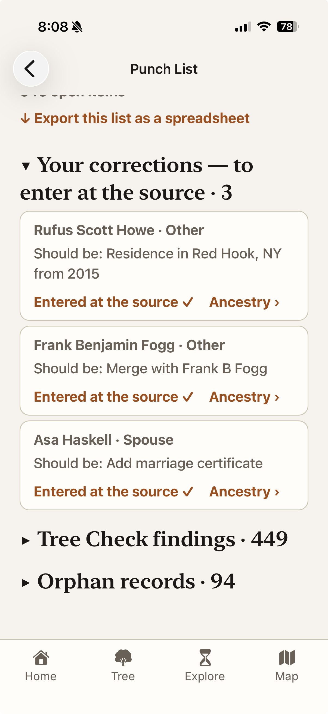

Witness treats your imported file as the record — it never edits your tree. But the moment you spot that a birth year is wrong is rarely the moment you’re sitting at Ancestry. So Witness gives you a margin to pencil the correction into, right beside the record, and a punch list that gathers everything still open — your corrections, the Tree Check’s findings, the orphan records — each row with its road back to the source.
How you get here: Tree tab → The punch list — or from the Research ledger, which counts the judgments you’ve already made; the punch list is the other half, what is still open. Corrections themselves are written on a person’s page, in the section below.
At the bottom of every person’s page, past the register: In the margin. ✎ Correct the record › opens the add flow — pick the fact (Name, Birth, Death, Burial, the record’s own events, Parents, Spouse, or Other), read what the Record says, write what it Should be, and, if you want it on the worksheet, a line of why — the source or reasoning. The correction saves on an explicit button, and a small ✎ appears beside the fact it annotates, up in the vitals and on the lifeline.

1 2 3 4 5One screen for everything still open, in three folds: Your corrections — to enter at the source, Tree Check findings, and Orphan records. The counts here are the same counts as the workbench screens — a finding marked fixed or ruled not an error there disappears here too, and a correction resolved here dims in the margin it came from. One decision, one truth, everywhere.

1 2